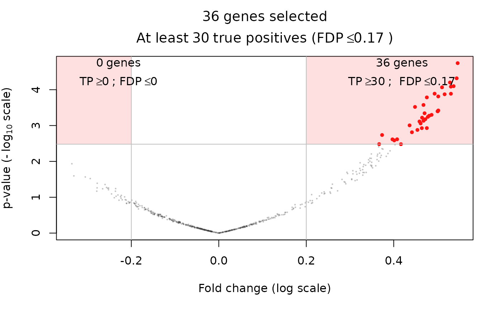
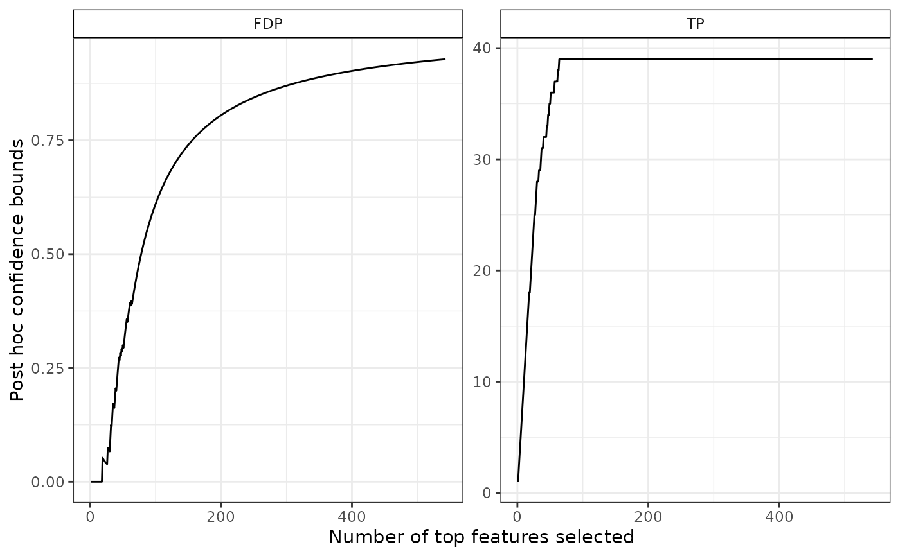

Create a 'SansSouci' object from simulation in the Gaussian equi-correlated model
SansSouciSim(...)
Arguments
| ... | Parameters to be passed to gaussianSamples |
|---|
See also
Examples
obj <- SansSouciSim(m = 543, rho = 0.4, n = 210, pi0 = 0.8, SNR = 3, prob = 0.5) alpha <- 0.1 # Adaptive Simes (lambda-calibration) set.seed(542) res <- fit(obj, B = 100, alpha = alpha, family = "Simes") plot(res)volcanoPlot(res, q = 0.05, r = 0.2)  # upper bound on number of signals if the entire data set # (and corresponding lower bound on FDP) predict(res) #> TP FDP #> 29.000000 0.946593 # confidence curve plot(res)  # comparison to other confidence curves # Parametric Simes (no calibration -- assume positive dependence (PRDS)) res0 <- fit(obj, B = 0, alpha = alpha, family = "Simes") res0 #> 'SansSouci' object: #> Number of hypotheses: 543 #> Number of observations: 210 #> 2-sample data #> #> Truth: #> 109 false null hypotheses (signals) out of 543 (pi0=0.799) #> Parameters: #> Test function: rowWelchTests #> Number of permutations: B=0 #> Significance level: alpha=0.1 #> Reference family: Simes #> (of size: K=543) #> #> Output: #> Calibration parameter: lambda=0.1 # Oracle oracle <- fit(obj, alpha = alpha, family = "Oracle") oracle #> 'SansSouci' object: #> Number of hypotheses: 543 #> Number of observations: 210 #> 2-sample data #> #> Truth: #> 109 false null hypotheses (signals) out of 543 (pi0=0.799) #> Parameters: #> Test function: rowWelchTests #> Number of permutations: B=NA #> Significance level: alpha=NA #> Reference family: Oracle #> (of size: K=543) #> #> Output: #> Calibration parameter: lambda=NA confs <- list(Simes = predict(res0, all = TRUE), "Simes+calibration" = predict(res, all = TRUE), "Oracle" = predict(oracle, all = TRUE)) plotConfCurve(confs)
if (FALSE) { # Use wilcoxon tests instead of Welch tests res <- fit(obj, B = 100, alpha = 0.1, rowTestFUN = rowWilcoxonTests) volcanoPlot(res, q = 0.05, r = 0.2) }